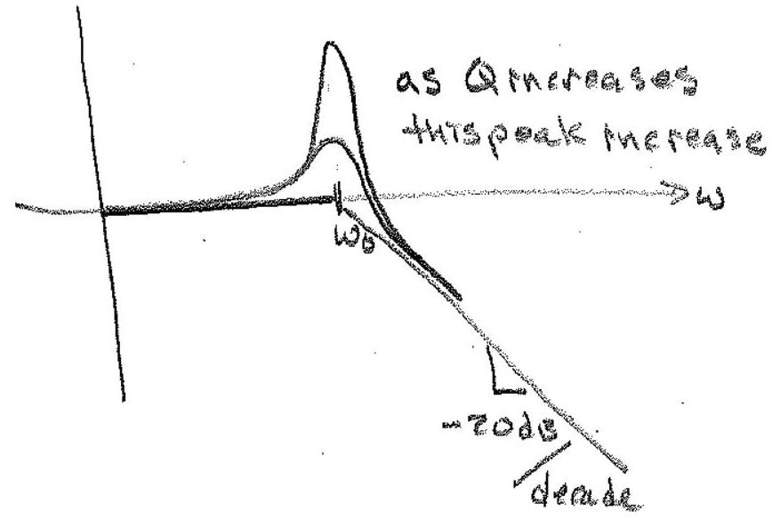

Lecture 14
Bode Plots and Linear System ID
2025-09-26
From Transfer Functions to Frequency Responses
Recall if a causal system is stable then the right-most pole is in the left-hand plane and the ROC includes the imaginary axis (\(\text{Re}(s) = 0\)). If the system is non-causal and stable then the ROC is a strip in the complex plane that includes the imaginary axis. In either case, evaluating the transfer function \(H(s)\) on the imaginary axis gives the frequency response \(H(j\omega)\).
\[\left.H(s)\right|_{s=j \omega}=H(j \omega)\]
Thus we have another way of finding the frequency response:
Find the transfer function
Determine if the system is stable
Evaluate the transfer function on the imaginary axis
Example 1
Given the following block diagram, where \(K_1\) and \(K_2\) are gain parameters, determine the transfer function \(H(s)\) and the frequency response \(H(j\omega)\) if it exsists.
[Step 1]
\[H(s) = \frac{s+7}{s^2 + (16 + K_1)s + 49 + 7K_1 + K_2}\]
[Step 2]
\(H(s)\) is stable if the roots of \(s^2 + (16 + K_1)s + 49 + 7K_1 + K_2\) are in the left-hand plane (in controls these are called the closed-loop poles). From the quadratic formula the roots are \(\frac{1}{2}\left(-16-K_1 \pm \sqrt{60+4K_1 + K_1^2 - 4K_2}\right)\). If the real parts are less than zero, the system is stable and the frequency response exists.
[Step 3]
\[H(j\omega) = \left. H(s)\right|_{s=j \omega} = \frac{7+j\omega}{49+7K_1 + K_2 - \omega^2 + j(16 + K_1)\omega}\]
Routh-Horwitz Criteria
For larger systems the order of the denominator polynomial makes determining stability more difficult, especially when there are parameters like in the example above. A shortcut is a numerical procedure known as the Routh-Horwitz criteria.
Let \(H(s) = \frac{P(s)}{Q(s)}\). Write \(Q(s)\) in the form
\[Q(s) = a_0s^n + a_1s^{n-1} + \cdots + a_{n-1}s + a_n\]
If any \(a_i\) are zero, or negative with any other positive coefficients then the system is unstable.
Else, form the Routh array
\[\begin{aligned} s^n &\quad a_0 &\quad a_2 &\quad a_4 &\quad \cdots\\ s^{n-1} &\quad a_1 &\quad a_3 &\quad a_5 &\quad \cdots\\ s^{n-2} &\quad b_1 &\quad b_2 &\quad b_3 &\quad \cdots\\ s^{n-3} &\quad c_1 &\quad c_2 &\quad c_3 &\quad \cdots\\ \vdots &\quad \vdots &\quad \vdots &\quad \vdots &\quad \cdots\\ s^2 &\quad e_1 &\quad e_2 &\quad &\quad \\ s^1 &\quad f_1 &\quad &\quad &\quad \\ s^0 &\quad g_1 &\quad &\quad &\quad \\ \end{aligned}\]
where
\[b_1 = \frac{a_1\cdot a_2 - a_0\cdot a_3}{a_1}\] \[b_2 = \frac{a_1\cdot a_4 - a_0\cdot a_5}{a_1}\] etc. \[c_1 = \frac{b_1\cdot a_3 - a_1\cdot b_2}{b_1}\] \[c_2 = \frac{b_1\cdot a_5 - a_1\cdot b_3}{b_1}\]
etc.
All signs of the first column (\(a_0, a_1, b_1, c_1,\ldots, e_1, f_1,g_1\)) must be positive for the system to be table.
Example 1 Revisited
Applying this procedure to our previous example, the Routh array is
\[\begin{aligned} s^2 &\quad 1 &\quad 49+7K_1 + K_2 \\ s^1 &\quad 16+K_1 &\quad 0 \\ s^0 &\quad b_1 &\quad \\ \end{aligned}\]
where
\[b_1 = \frac{(16+K_1)(49+7K_1 + K_2) - 0(1)}{16+K_1} = 49 + 7K_1 + K_2\]
Thus to be stable \(16+K_1 > 0\) and \(49 + 7K_1 + K_2 > 0\), or \(K_1 > -16\) and \(K_2 > -49-7K_1\).
Example 2
Given
\[H(s) = \frac{5s^2 + 7s + 1}{s^4 + 2s^3 + 3s^2 + 4s + 5}\]
Find the frequency response if it exists, or state why it does not exist.
\[Q(s) = s^4 + 2s^3 + 3s^2 + 4s + 5\]
All coefficients are positive. Forming the Routh array
\[\begin{aligned} s^4 &\quad 1 &\quad 3 &\quad 5 &\quad \cdots\\ s^3 &\quad 2 &\quad 4 &\quad 0 &\quad \cdots\\ s^2 &\quad b_1 &\quad b_2 &\quad &\quad \cdots\\ s^1 &\quad c_1 &\quad &\quad &\quad \\ s^0 &\quad d_1 &\quad &\quad &\quad \\ \end{aligned}\]
where
\[b_1 = \frac{2\cdot 3 - 1\cdot 4}{2} = 1\] \[b_2 = \frac{2\cdot 5 - 1\cdot 0}{2} = 5\] \[c_1 = \frac{4\cdot b_1 - 2\cdot b_2}{b_1} = -6 \text{ (sign change detected)}\] \[d_1 = \frac{c_1\cdot b_2 - b_1\cdot 0}{c_1} = 5 \text{ (another sign change detected)}\]
Therefore the system is unstable and \(H(j\omega)\) does not exist.
Note: if you are only interested in the stability you can stop computing the coefficients of the Routh array as soon as you detect a sign change in the first column. However, if you continue to the end, the number of sign changes tells you how many poles are in the right-hand side of the complex plane.
Example 3
\[H(s) = \frac{-7s+4}{s^3 + 3s^2 + 2s + 5}\]
\[Q(s) = s^3 + 3s^2 + 2s + 5\]
All the coefficients are positive. Forming the Routh array
\[\begin{aligned} s^3 &\quad 1 &\quad 2 &\quad 0 &\quad \cdots\\ s^2 &\quad 3 &\quad 5 &\quad &\quad \cdots\\ s^1 &\quad b_1 &\quad &\quad &\quad \\ s^0 &\quad c_1 &\quad &\quad &\quad \\ \end{aligned}\]
where
\[b_1 = \frac{2\cdot 3 - 1\cdot 5}{3} = \frac{1}{3}\]
\[c_1 = \frac{5\cdot b_1 - 3\cdot 0}{b_1} = 5\]
No sign changes implies the system is stable. Performing the substitution the frequency response is
\[H(j\omega) = \frac{4-j7\omega}{5 - 3\omega^2 + j(2\omega - \omega^3)}\]
Bode Plots and System Identification
Recall the most common way to visualize a stable CT LTI system is via a Bode plot.
semilog plot of \(|H(j\omega)|\) or \(|H(j2\pi f)|\) in dB
semilog plot of \(\angle H(j\omega)\) or \(\angle H(j2\pi f)\) in radians or degrees
This is easy to do given an expression for \(H(j\omega)\) using a computer. But what if we are not given an expression? How do we proceed?
System Identification
TODO FIGURE
We may have a model for some parts of a system (blocks) but not others.
A full coverage of linear system identification is outside the course scope, however we can easily measure points of \(H(j\omega)\) using sinusoidal inputs.
TODO FIGURE
From this, knowledge of manually contructing Bode plots can give information about the order of the system, type if a filter, and a credible transfer function.
Consider a generic transfer function of a stable system
\[H(s)=\frac{\left(s+b_{1}\right)\left(s+b_{2}\right) \cdots\left(s+b_{M}\right)}{\left(s+a_{1}\right)\left(s+a_{2}\right) \cdots\left(s+a_{N}\right)}\] where \(\operatorname{Re}(s)>\max\limits_k \operatorname{Re}(a_k) < 0\), \(N>M\), and \(-b_{k}\) are the zeros, \(-a_{k}\) the poles.
Rewrite by factoring as
\[H(s)=K \frac{\left(1+\frac{s}{b_{1}}\right)\left(1+\frac{s}{b_{2}}\right)\cdots\left(1+\frac{s}{b_{M}}\right)}{\left(1+\frac{s}{a_{1}}\right)\left(1+\frac{s}{a_{2}}\right)\cdots \left(1+\frac{s}{a_{N}}\right)}\] where
\[K = \frac{b_1\cdot b_2\cdot b_3 \cdots b_M}{a_1\cdot a_2\cdot a_3 \cdots a_N}\]
Since it is stable let \(s=j\omega\).
\[H(j\omega)=K \frac{\left(1+\frac{j\omega}{b_{1}}\right)\left(1+\frac{j\omega}{b_{2}}\right)\cdots\left(1+\frac{j\omega}{b_{M}}\right)}{\left(1+\frac{j\omega}{a_{1}}\right)\left(1+\frac{j\omega}{a_{2}}\right)\cdots \left(1+\frac{j\omega}{a_{N}}\right)}\]
Taking the magnitude
\[\left|H(j\omega)\right|=\left|K\right| \frac{\left|1+\frac{j\omega}{b_{1}}\right|\left|1+\frac{j\omega}{b_{2}}\right|\cdots\left|1+\frac{j\omega}{b_{M}}\right|}{\left|1+\frac{j\omega}{a_{1}}\right|\left|1+\frac{j\omega}{a_{2}}\right|\cdots \left|1+\frac{j\omega}{a_{N}}\right|}\]
Now, note the following properties of the \(\log\) function
\(\log\left(a^b\right) = b\cdot \log(a)\)
\(\log(a\cdot b) = \log(a) + \log(b)\)
\(\log\left(\frac{a}{b}\right) = \log(a) - \log(b)\)
Then when computing the magnitude in dB
\[\begin{aligned} 20\log_{10} \left|H(j\omega)\right| &= 20\log|K|\\ &\quad + 20\log\left|1+\frac{j\omega}{b_{1}}\right| + \cdots + 20\log\left|1+\frac{j\omega}{b_{M}}\right|\\ &\quad + 20\log\left|1+\frac{j\omega}{a_{1}}\right| + \cdots + 20\log\left|1+\frac{j\omega}{a_{N}}\right| \end{aligned}\]
We see the magnitude plot in dB is a sum of plots for each term, with the non-gain terms having an identical form. Lets look at an asymptotic approximation to \(\left|1+\frac{j\omega}{a}\right|\) for some \(a\in\mathbb{R}\) and convert to dB
when \(\omega << |a|\), \(20\log\left|1+\frac{j\omega}{a}\right| \approx \left|1\right| = 0\) dB
when \(\omega >> |a|\), \(20\log\left|1+\frac{j\omega}{a}\right| \approx \left|\omega\right| = 20\) dB per decade slope
TODO FIGURE
Since the plots add, if we have a mixture of real zeros and poles the plots add or subtract accordingly with slopes adding or subtracting.
TODO FIGURE
Thus the slope can be used to estimate the system order.
Cases that are not addressed above:
zero at the origin \[20\log_{10}|j\omega| = 20\log_{10}(\omega)\]
pole at the origin \[20\log_{10}\left|\frac{1}{j\omega}\right| = -20\log_{10}(\omega)\]
second order with complex poles \(-a, -a^*\) \[H(s) = \frac{|a|^2}{(s+a)(s+a^*)} = \frac{\omega_0^2}{s^2 + 2\eta\omega_0 s + \omega+0^2}\]
\(\omega_0\) is the natural frequency, \(\omega_0^2 = |a|^2\)
\(\eta\) is the damping ratio (\(\eta > 1\) overdamped, \(\eta < 1\) underdamped, \(\eta = 1\) critically damped), \(2\eta\omega_0 = \text{Re}(a)\)
Q factor \(Q=\frac{1}{2\eta}\)
\[20\log_{10}|H(j\omega)| = -10\log_{10}\left\{ \left[1-\left(\frac{\omega}{\omega_0}\right)^2\right] + \left[2\eta \left(\frac{\omega}{\omega_0}\right)\right]^2\right\}\]
